These are some of the projects I took part in. Most of them were completed in my time at RPI.
Projects
Autonomous Helicopter Aerial Refueling
I developed the first autonomous control method for helicopter aerial refueling . The probe attached to the helicopter needs to dock on the drogue to accomplish successful aerial refueling.
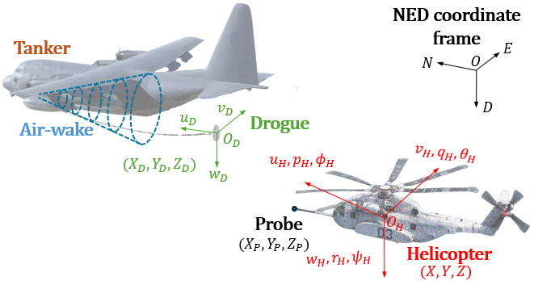
As shown below, I incorporated a data-driven reinforcement learning (RL) agent to make necessary corrections to the outer loop.
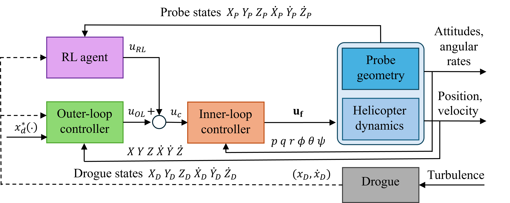
Using this new control system, I demonstrated that the proposed controller outperforms the general inner-outer control architecture.
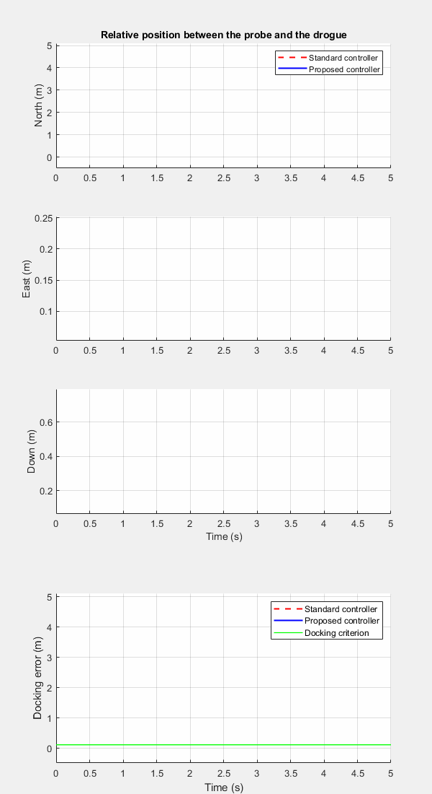
The simulation below highlights that the proposed controller is able to guide the probe into the drogue, maintaining stability.
Highlights
Developed an end-to-end GNC architecture for the maneuver, which involved a UH-60 Blackhawk helicopter model and Navair drogue model.
Trained the RL agent in a simplified environment with a 90% time reduction.
Improved safety through a safe-RL algorithm.
Improved accuracy of 45% over the conventional inner-outer control method.
Developed a nonlinear model predictive controller for real-time trajectory tracking.
Validated the controller wind turbulence and bow-wave effect.
Development of a Quadrotor for autolanding
Implemented real-time MPC with GPS and visual feedback using CasADi.
Highlights
Pixhawk as the flight controller equipped with GPS.
Raspberry Pi 4B is the flight computer that takes camera input through the Pi camera.
The camera processes the Aruco marker feed and generates the optimal trajectory using CasADi.
Then, our team developed the aircraft into a Quadrotor Biplane Tailsitter by integrating two parallel Eppler 221 wings.
MPC-based Trajectory Tracking for Autonomous Cars
Developed a nonlinear Model Predictive Controller for high-performance trajectory tracking of an autonomous race car in the BeamNG simulation environment. The vehicle is represented by a nonlinear bicycle model with Fiala tire dynamics, while the engine torque and its inverse (throttle) map are learned from simulation data using neural networks. The MPC is formulated in the Frenet frame over a spatial horizon and solved with CasADi/IPOPT on a millisecond time scale, tracking time-optimal race lines under both mild and aggressive driving profiles.
Highlights
Identified Fiala pure- and combined-slip tire parameters from collected vehicle data.
Trained forward and inverse engine torque neural networks to map throttle to wheel torque.
Generated time-optimal race line trajectories for "mild" and "aggressive" driving levels.
Achieved sub-metre lateral tracking error with real-time solve times.
Developing a framework for navigation in an unstructured environment
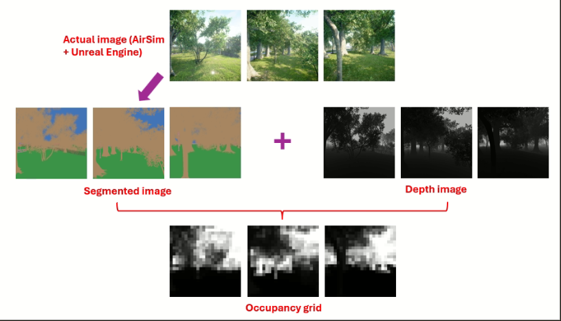
Currently developing an ML-driven framework to generate a feasible path to navigate in unstructured environments (such as forests). Only using the camera feed, the system is able to identify obstacles and avoid them while navigating through the environment.
Highlights
The training images are obtained in an Unreal-Engine environment utilizing AirSim. Segmented images identify the obstacles (such as trees) and obstacle-free spaces (such as grasslands). Furthermore, depth camera images are employed to extract the depth information.
These segmented images and depth images are combined to create a 2D occupancy grid.
A neural network is trained to estimate the 2D occupancy grid using raw camera images, which facilitates local navigation.
As shown below, raw camera images are processed to create an occupancy grid that contains local information about the obstacles. This information is then passed into an online planner for trajectory generation, which is tracked by a controller.
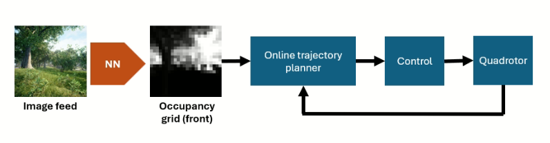
Interactive Optimization for Human-in-the-Loop Control
Interactive optimization combines the power of algorithms with human insight. Most past work either asks users the same type of question over and over or requires them to tweak the model manually—both limiting how much useful knowledge gets included and often needing expert-level skills. To fix this, we created a new framework that lets users answer different types of questions, which we then use to build a smarter, more accurate optimization model (SM-MILP). The algorithm is shown below.
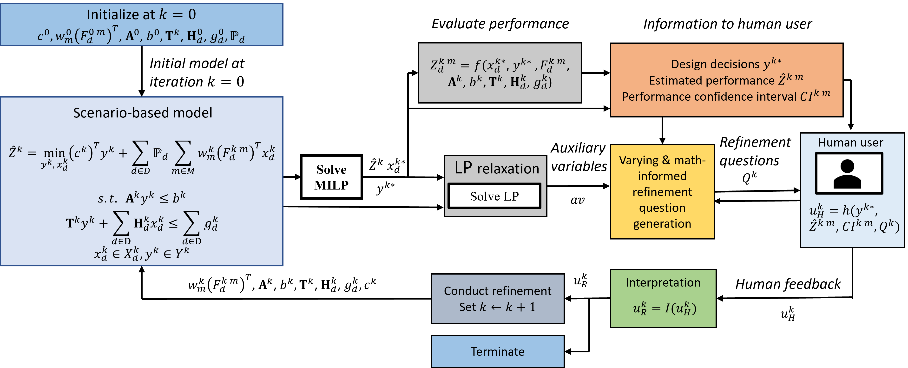
This model aims to suggest designs the user is happy with. Furthermore, it asks targeted questions to gather key info and reduce uncertainty using a CVaR approach. In tests on a supplier selection problem, our method closed the gap between model and reality, reached better solutions faster, and gave tighter confidence intervals.
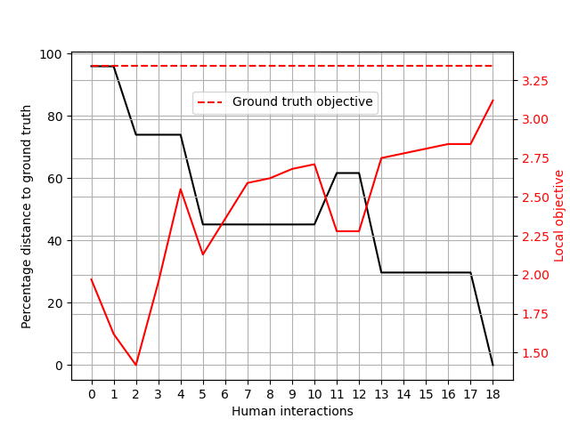
As shown in the above figure, this interactive optimization method allows us to reach the ground truth within a finite number of human interactions.
Controlling a Moving Bed with Synchronized 2D Motion
This project was about synchronizing the movement of two motors to enable precise 2D stretching, a crucial process for manufacturing flexible LED panels. I constructed the electronic setup by assembling motors, power supply, controllers, etc. Then, the off-the-shelf controller was programmed to achieve synchronous control using the leader-follower architecture.
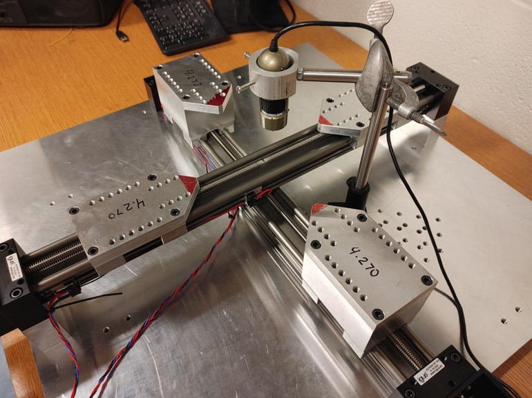
Mobile Robots for Cooperative Object Handling
Design and developed a team of mobile robot that can carry a long rigid beam in a cluttered environment collaboratively using leader-follower architecture. The control algorithm only utilized the position and velocity of the robots to maintain the cooperative behaviour.
Highlights
Lidar scanner for localization and identifying obstacles.
Arucomarker to identify the position of the follower.
RRT algorithm to generate the optimal trajectory to avoid obstacles and reach the target in MATLAB.
In-house developed embedded controller in C++.
Formula SAE 2018 - United Kingdom
Formula SAE is an educational motorsport competition. We participated in the 2018 competition held at Silverstone, UK, representing my home country Sri Lanka. We ranked 33rd out of 120 teams from around the world and 2nd in the Asian region.
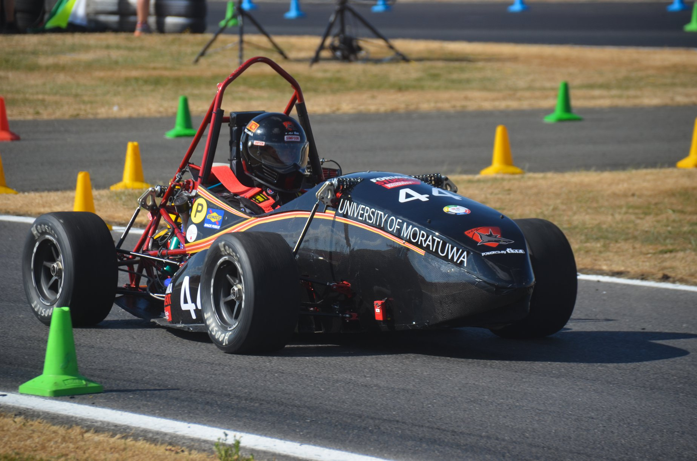
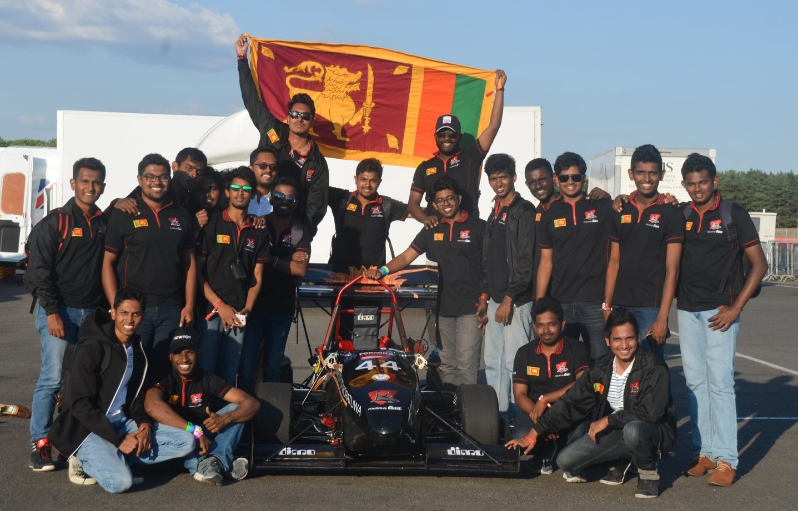
Developed the steering system that involved mathematical modeling of the entire system to find the optimal steering angles using MATLAB.
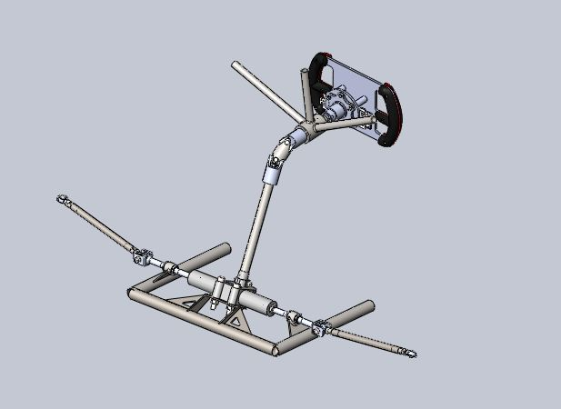
Conducted numerical simulations to verify the performance of the steering system using software tools such as SOLIDWORKS and Ansys.
Designed, analyzed, tested, and manufactured carbon fiber components such as the steering wheel, plenum, and vehicle body.
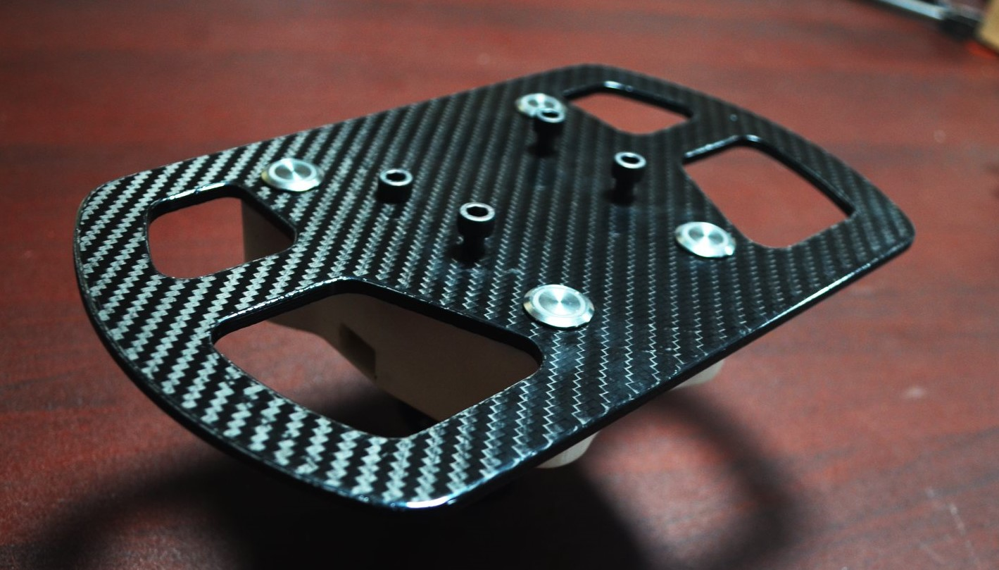
Manufactured metal components through conventional machining techniques.